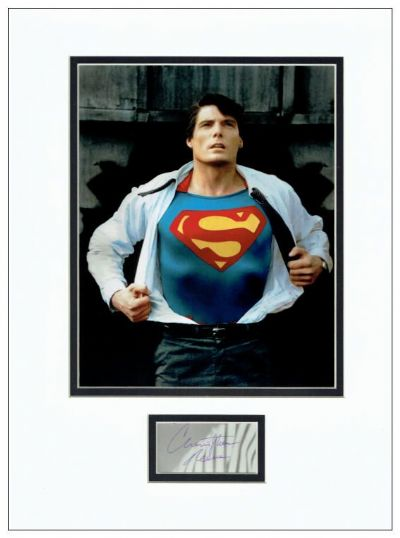
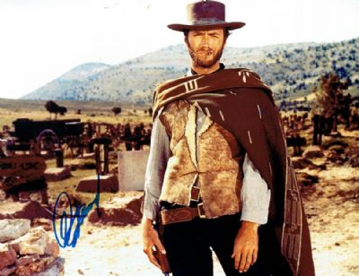
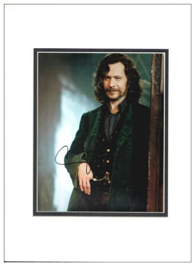

This site is a place for all the autograph collectors who want to talk with other people who have the same passion as they do. They can talk, sell, buy and exchange any autograph they want.
The exchange rate
Each autograph is from a specific category. The rating exchange shows how many autographs of a certain type or what autograph from a certain persoality the collector is willig to trade for.
Movies category:

Christopher Reeve - Superman:
Christopher Reeve Autograph Signed - blue ink autograph of Christopher Reeve mounted with a superb colour photo of him in the role of Superman. Please note that the signature is on a dedicated photograph which remains intact beneath the mount. Double mounted in cream and black to an overall size of 16 x 12 inches.
Willing to trade for: nothing.
Price: 255.15$.

Clint Eastwood:
Clint Eastwood Autograph Signed Photo - authentic blue marker pen autograph on a superb large format photo from the classic 1967 film "A Fistful of Dollars". Signed photo acquired from the founder of the UACC Registered Dealer program. Signed photo measures 14 x 11 inches.
Willing to trade for: nothing.
Price: 334.53€.

Gary Oldman - Sirius Black:
Black ink autograph of English actor Gary Oldman on a photo depicting him in the role of Sirius Black from Harry Potter. Signature obtained by a UACC Registered Dealer. Double mounted in cream and black to an overall size of 16 x 12 inches.